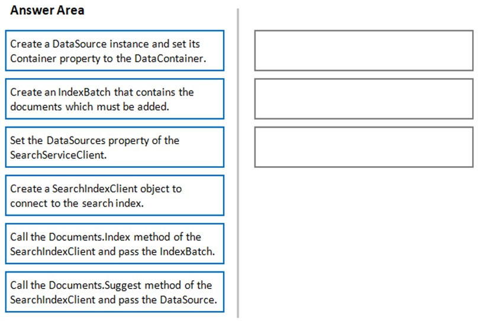
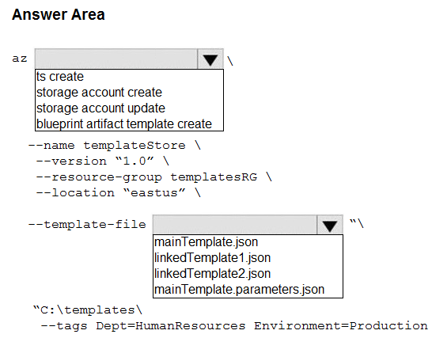
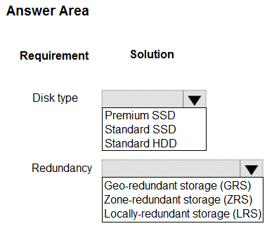

Topic 1 - Question Set 1
You have two Hyper-V hosts named Host1 and Host2. Host1 has an
Azure virtual machine named VM1 that was deployed by using a
custom Azure Resource
Manager template.
You need to
move VM1 to Host2.
What should you do?
- A. From the Update management blade, click Enable.
- B. From the Overview blade, move VM1 to a different subscription.
- C. From the Redeploy blade, click Redeploy.
- D. From the Profile blade, modify the usage location.
DRAG DROP -
You have downloaded an Azure Resource Manager
template to deploy numerous virtual machines. The template is
based on a current virtual machine, but must be adapted to
reference an administrative password.
You need to make
sure that the password is not stored in plain text.
You
are preparing to create the necessary components to achieve
your goal.
Which of the following should you create to
achieve your goal? Answer by dragging the correct option from
the list to the answer area.
Select and Place:
Your company has an Azure Kubernetes Service (AKS) cluster
that you manage from an Azure AD-joined device. The cluster is
located in a resource group.
Developers have created an
application named MyApp. MyApp was packaged into a container
image.
You need to deploy the YAML manifest file for the
application.
Solution: You install the Azure CLI on the
device and run the kubectl apply `"f myapp.yaml command.
Does
this meet the goal?
- A. Yes
- B. No
Your company has an Azure Kubernetes Service (AKS) cluster
that you manage from an Azure AD-joined device. The cluster is
located in a resource group.
Developers have created an
application named MyApp. MyApp was packaged into a container
image.
You need to deploy the YAML manifest file for the
application.
Solution: You install the docker client on
the device and run the docker run -it
microsoft/azure-cli:0.10.17 command.
Does this meet the
goal?
- A. Yes
- B. No
Your company has a web app named WebApp1.
You use the
WebJobs SDK to design a triggered App Service background task
that automatically invokes a function in the code every time
new data is received in a queue.
You are preparing to
configure the service processes a queue data item.
Which
of the following is the service you should use?
- A. Logic Apps
- B. WebJobs
- C. Flow
- D. Functions
Your company has an Azure subscription.
You need to
deploy a number of Azure virtual machines to the subscription
by using Azure Resource Manager (ARM) templates. The virtual
machines will be included in a single availability set.
You
need to ensure that the ARM template allows for as many
virtual machines as possible to remain accessible in the event
of fabric failure or maintenance.
Which of the following
is the value that you should configure for the
platformFaultDomainCount property?
- A. 10
- B. 30
- C. Min Value
- D. Max Value
Your company has an Azure subscription.
You need to
deploy a number of Azure virtual machines to the subscription
by using Azure Resource Manager (ARM) templates. The virtual
machines will be included in a single availability set.
You
need to ensure that the ARM template allows for as many
virtual machines as possible to remain accessible in the event
of fabric failure or maintenance.
Which of the following
is the value that you should configure for the
platformUpdateDomainCount property?
- A. 10
- B. 20
- C. 30
- D. 40
DRAG DROP -
You are creating an Azure Cosmos DB account
that makes use of the SQL API. Data will be added to the
account every day by a web application.
You need to
ensure that an email notification is sent when information is
received from IoT devices, and that compute cost is
reduced.
You decide to deploy a function app.
Which
of the following should you configure the function app to use?
Answer by dragging the correct options from the list to the
answer area.
Select and Place:
This question requires that you evaluate the underlined text
to determine if it is correct.
You company has an
on-premises deployment of MongoDB, and an Azure Cosmos DB
account that makes use of the MongoDB API.
You need to
devise a strategy to migrate MongoDB to the Azure Cosmos DB
account.
You include the Data Management Gateway tool in
your migration strategy.
Instructions: Review the
underlined text. If it makes the statement correct, select `No
change required.` If the statement is incorrect, select the
answer choice that makes the statement correct.
- A. No change required
- B. mongorestore Most Voted
- C. Azure Storage Explorer
- D. AzCopy
You are developing an e-Commerce Web App.
You want to use
Azure Key Vault to ensure that sign-ins to the e-Commerce Web
App are secured by using Azure App Service authentication and
Azure Active
Directory (AAD).
What should you do on
the e-Commerce Web App?
- A. Run the az keyvault secret command.
- B. Enable Azure AD Connect.
- C. Enable Managed Service Identity (MSI).
- D. Create an Azure AD service principal.
Tema 1 - Conjunto de Preguntas 1
Tienes dos hosts de Hyper-V llamados Host1 y Host2. Host1 tiene una máquina virtual de Azure llamada VM1 que fue implementada mediante una plantilla personalizada de Azure Resource Manager. Necesitas mover VM1 a Host2. ¿Qué deberías hacer?
- A. Desde la hoja de administración de actualizaciones, haz clic en Habilitar.
- B. Desde la hoja General, mueve VM1 a una suscripción diferente.
- C. Desde la hoja de Redistribución, haz clic en Redistribuir.
- D. Desde la hoja de Perfil, modifica la ubicación de uso.
ARRASTRAR Y SOLTAR -
Tienes descargada una plantilla de
Azure Resource Manager para implementar numerosas máquinas
virtuales. La plantilla se basa en una máquina virtual actual,
pero debe adaptarse para hacer referencia a una contraseña
administrativa.
Necesitas asegurarte de que la contraseña
no se almacene en texto plano.
Estás preparando para
crear los componentes necesarios para alcanzar tu objetivo.
¿Qué
deberías crear para lograr tu objetivo? Responde arrastrando
la opción correcta de la lista al área de respuesta.
Selecciona
y Coloca:
Tu empresa tiene un clúster de Azure Kubernetes Service (AKS)
que administras desde un dispositivo unido a Azure AD. El
clúster se encuentra en un grupo de recursos.
Los
desarrolladores han creado una aplicación llamada MyApp. MyApp
se empaquetó en una imagen de contenedor.
Necesitas
implementar el archivo de manifiesto YAML para la
aplicación.
Solución: Instalas Azure CLI en el
dispositivo y ejecutas el comando kubectl apply -f
myapp.yaml.
¿Cumple esto el objetivo?
- A. Sí
- B. No
Tu empresa tiene un clúster de Azure Kubernetes Service (AKS)
que administras desde un dispositivo unido a Azure AD. El
clúster se encuentra en un grupo de recursos.
Los
desarrolladores han creado una aplicación llamada MyApp. MyApp
se empaquetó en una imagen de contenedor.
Necesitas
implementar el archivo de manifiesto YAML para la
aplicación.
Solución: Instalas el cliente de Docker en el
dispositivo y ejecutas el comando docker run -it
microsoft/azure-cli:0.10.17.
¿Cumple esto el objetivo?
- A. Sí
- B. No
Tu empresa tiene una aplicación web llamada WebApp1.
Usas
el SDK de WebJobs para diseñar una tarea en segundo plano de
App Service que se activa automáticamente y llama a una
función en el código cada vez que se recibe un nuevo dato en
una cola.
Te estás preparando para configurar el servicio
que procesa un elemento de datos de la cola.
¿Cuál de los
siguientes servicios debes usar?
- A. Logic Apps
- B. WebJobs
- C. Flow
- D. Functions
Tu empresa tiene una suscripción de Azure.
Necesitas
implementar varias máquinas virtuales de Azure en la
suscripción usando plantillas de Azure Resource Manager (ARM).
Las máquinas virtuales estarán incluidas en un solo conjunto
de disponibilidad.
Necesitas asegurarte de que la
plantilla ARM permita que tantas máquinas virtuales como sea
posible permanezcan accesibles en caso de fallo de hardware o
mantenimiento.
¿Cuál de los siguientes es el valor que
deberías configurar para la propiedad
platformFaultDomainCount?
- A. 10
- B. 30
- C. Valor Mínimo
- D. Valor Máximo
Tu empresa tiene una suscripción de Azure.
Necesitas
implementar varias máquinas virtuales de Azure en la
suscripción usando plantillas de Azure Resource Manager (ARM).
Las máquinas virtuales estarán incluidas en un solo conjunto
de disponibilidad.
Necesitas asegurarte de que la
plantilla ARM permita que tantas máquinas virtuales como sea
posible permanezcan accesibles en caso de fallo de hardware o
mantenimiento.
¿Cuál de los siguientes es el valor que
deberías configurar para la propiedad
platformUpdateDomainCount?
- A. 10
- B. 20
- C. 30
- D. 40
ARRASTRAR Y SOLTAR -
Estás creando una cuenta de Azure
Cosmos DB que utiliza la API de SQL. Todos los días, una
aplicación web añadirá datos a la cuenta.
Necesitas
asegurarte de que se envíe una notificación por correo
electrónico cuando se reciba información de dispositivos IoT,
y de reducir el costo de cómputo.
Decides desplegar una
aplicación de funciones (function app).
¿Cuál de los
siguientes deberías configurar para que la aplicación de
funciones lo use? Responde arrastrando las opciones correctas
de la lista al área de respuestas.
Seleccionar y
colocar:
Esta pregunta requiere que evalúes el texto subrayado para
determinar si es correcto.
Tu empresa tiene una
implementación local de MongoDB y una cuenta de Azure Cosmos
DB que utiliza la API de MongoDB.
Necesitas idear una
estrategia para migrar MongoDB a la cuenta de Azure Cosmos
DB.
Incluyes la herramienta Data Management Gateway en tu
estrategia de migración.
Instrucciones: Revisa el texto
subrayado. Si hace que la afirmación sea correcta, selecciona
`No se requieren cambios`. Si la afirmación es incorrecta,
selecciona la opción de respuesta que haga que la afirmación
sea correcta.
- A. No se requieren cambios
- B. mongorestore
- C. Azure Storage Explorer
- D. AzCopy
Estás desarrollando una aplicación web de comercio
electrónico.
Quieres usar Azure Key Vault para asegurar
que los inicios de sesión en la aplicación web de comercio
electrónico estén protegidos utilizando la autenticación de
Azure App Service y Azure Active Directory (AAD).
¿Qué
deberías hacer en la aplicación web de comercio
electrónico?
- A. Ejecutar el comando az keyvault secret.
- B. Habilitar Azure AD Connect.
- C. Habilitar Identidad de Servicio Administrado (MSI).
- D. Crear un principal de servicio de Azure AD.
This question requires that you evaluate the underlined text
to determine if it is correct.
Your Azure Active
Directory Azure (Azure AD) tenant has an Azure subscription
linked to it.
Your developer has created a mobile
application that obtains Azure AD access tokens using the
OAuth 2 implicit grant type.
The mobile application must
be registered in Azure AD.
You require a redirect URI
from the developer for registration purposes.
Instructions:
Review the underlined text. If it makes the statement correct,
select `No change is needed.` If the statement is incorrect,
select the answer choice that makes the statement correct.
- A. No change required.
- B. a secret
- C. a login hint
- D. a client ID
You are creating an Azure key vault using PowerShell. Objects
deleted from the key vault must be kept for a set period of 90
days.
Which two of the following parameters must be used
in conjunction to meet the requirement? (Choose two.)
- A. EnabledForDeployment
- B. EnablePurgeProtection
- C. EnabledForTemplateDeployment
- D. EnableSoftDelete
HOTSPOT -
You have an Azure Active Directory (Azure AD)
tenant.
You want to implement multi-factor authentication
by making use of a conditional access policy. The conditional
access policy must be applied to all users when they access
the Azure portal.
Which three settings should you
configure? To answer, select the appropriate settings in the
answer area.
NOTE: Each correct selection is worth one
point.
Hot Area:

You manage an Azure SQL database that allows for Azure AD
authentication.
You need to make sure that database
developers can connect to the SQL database via Microsoft SQL
Server Management Studio (SSMS). You also need to make sure
the developers use their on-premises Active Directory account
for authentication. Your strategy should allow for
authentication prompts to be kept to a minimum.
Which of
the following should you implement?
- A. Azure AD token.
- B. Azure Multi-Factor authentication.
- C. Active Directory integrated authentication.
- D. OATH software tokens.
You are developing an application to transfer data between
on-premises file servers and Azure Blob storage. The
application stores keys, secrets, and certificates in Azure
Key Vault and makes use of the Azure Key Vault APIs.
You
want to configure the application to allow recovery of an
accidental deletion of the key vault or key vault objects for
90 days after deletion.
What should you do?
- A. Run the Add-AzKeyVaultKey cmdlet.
- B. Run the az keyvault update --enable-soft-delete true --enable-purge-protection true CLI.
- C. Implement virtual network service endpoints for Azure Key Vault.
- D. Run the az keyvault update --enable-soft-delete false CLI.
HOTSPOT -
You have developed a Web App for your company.
The Web App provides services and must run in multiple
regions.
You want to be notified whenever the Web App
uses more than 85 percent of the available CPU cores over a 5
minute period. Your solution must minimize costs.
Which
command should you use? To answer, select the appropriate
settings in the answer area.
NOTE: Each correct selection
is worth one point.
Hot Area:

Note: The question is included in a number of questions that
depicts the identical set-up. However, every question has a
distinctive result. Establish if the solution satisfies the
requirements.
You are configuring a web app that delivers
streaming video to users. The application makes use of
continuous integration and deployment.
You need to ensure
that the application is highly available and that the users'
streaming experience is constant. You also want to configure
the application to store data in a geographic location that is
nearest to the user.
Solution: You include the use of
Azure Redis Cache in your design.
Does the solution meet
the goal?
- A. Yes
- B. No
Note: The question is included in a number of questions that
depicts the identical set-up. However, every question has a
distinctive result. Establish if the solution satisfies the
requirements.
You are configuring a web app that delivers
streaming video to users. The application makes use of
continuous integration and deployment.
You need to ensure
that the application is highly available and that the users'
streaming experience is constant. You also want to configure
the application to store data in a geographic location that is
nearest to the user.
Solution: You include the use of an
Azure Content Delivery Network (CDN) in your design.
Does
the solution meet the goal?
- A. Yes
- B. No
Note: The question is included in a number of questions that
depicts the identical set-up. However, every question has a
distinctive result. Establish if the solution satisfies the
requirements.
You are configuring a web app that delivers
streaming video to users. The application makes use of
continuous integration and deployment.
You need to ensure
that the application is highly available and that the users'
streaming experience is constant. You also want to configure
the application to store data in a geographic location that is
nearest to the user.
Solution: You include the use of a
Storage Area Network (SAN) in your design.
Does the
solution meet the goal?
- A. Yes
- B. No
You develop a Web App on a tier D1 app service plan.
You
notice that page load times increase during periods of peak
traffic.
You want to implement automatic scaling when CPU
load is above 80 percent. Your solution must minimize
costs.
What should you do first?
- A. Enable autoscaling on the Web App.
- B. Switch to the Premium App Service tier plan.
- C. Switch to the Standard App Service tier plan.
- D. Switch to the Azure App Services consumption plan.
Esta pregunta requiere que evalúes el texto subrayado para
determinar si es correcto.
Tu inquilino de Azure Active
Directory Azure (Azure AD) tiene una suscripción de Azure
vinculada a él.
Tu desarrollador ha creado una aplicación
móvil que obtiene tokens de acceso de Azure AD utilizando el
tipo de concesión implícita de OAuth 2.
La aplicación
móvil debe estar registrada en Azure AD.
Requieres un URI
de redireccionamiento del desarrollador para fines de
registro.
Instrucciones: Revisa el texto subrayado. Si
hace que la afirmación sea correcta, selecciona `No es
necesario cambiarlo.` Si la afirmación es incorrecta,
selecciona la opción de respuesta que haga que la afirmación
sea correcta.
- A. No es necesario cambiarlo.
- B. un secreto
- C. una pista de inicio de sesión
- D. un ID de cliente
Estás creando un almacén de claves de Azure usando PowerShell.
Los objetos eliminados del almacén de claves deben conservarse
durante un período establecido de 90 días.
¿Cuáles dos de
los siguientes parámetros deben usarse en conjunto para
cumplir con el requisito? (Elige dos opciones.)
- A. EnabledForDeployment
- B. EnablePurgeProtection
- C. EnabledForTemplateDeployment
- D. EnableSoftDelete
ZONA CALIENTE -
Tienes un inquilino de Azure Active
Directory (Azure AD).
Deseas implementar la autenticación
multifactorial haciendo uso de una política de acceso
condicional. La política de acceso condicional debe aplicarse
a todos los usuarios cuando acceden al portal de Azure.
¿Qué
tres configuraciones debes establecer? Para responder,
selecciona las configuraciones adecuadas en el área de
respuesta.
NOTA: Cada selección correcta vale un
punto.
Zona Caliente:
Gestionas una base de datos Azure SQL que permite la
autenticación de Azure AD.
Necesitas asegurarte de que
los desarrolladores de la base de datos puedan conectarse a la
base de datos SQL a través de Microsoft SQL Server Management
Studio (SSMS). También necesitas asegurarte de que los
desarrolladores utilicen su cuenta de Active Directory local
para la autenticación. Tu estrategia debería permitir que las
solicitudes de autenticación se mantengan al mínimo.
¿Cuál
de las siguientes opciones deberías implementar?
- A. Token de Azure AD.
- B. Autenticación multifactor de Azure.
- C. Autenticación integrada de Active Directory.
- D. Tokens de software OATH.
Estás desarrollando una aplicación para transferir datos entre
servidores de archivos locales y almacenamiento de blobs de
Azure. La aplicación almacena claves, secretos y certificados
en Azure Key Vault y hace uso de las APIs de Azure Key
Vault.
Quieres configurar la aplicación para permitir la
recuperación de una eliminación accidental del key vault u
objetos del key vault durante 90 días después de la
eliminación.
¿Qué deberías hacer?
- A. Ejecutar el cmdlet Add-AzKeyVaultKey.
- B. Ejecutar el CLI az keyvault update --enable-soft-delete true --enable-purge-protection true.
- C. Implementar puntos de conexión de servicio de red virtual para Azure Key Vault.
- D. Ejecutar el CLI az keyvault update --enable-soft-delete false.
ÁREA CALIENTE -
Has desarrollado una aplicación web para
tu empresa. La aplicación web proporciona servicios y debe
ejecutarse en múltiples regiones.
Quieres ser notificado
siempre que la aplicación web utilice más del 85 por ciento de
los núcleos de CPU disponibles durante un período de 5
minutos. Tu solución debe minimizar los costos.
¿Qué
comando deberías usar? Para responder, selecciona la
configuración adecuada en el área de respuesta.
NOTA:
Cada selección correcta vale un punto.
Área Caliente:
Nota: La pregunta está incluida en una serie de preguntas que
representan la misma configuración. Sin embargo, cada pregunta
tiene un resultado distintivo. Establece si la solución
satisface los requisitos.
Estás configurando una aplicación web que ofrece vídeo en
streaming a los usuarios. La aplicación utiliza integración y
despliegue continuo.
Necesitas asegurarte de que la aplicación esté altamente
disponible y de que la experiencia de streaming de los
usuarios sea constante. También deseas configurar la
aplicación para almacenar datos en una ubicación geográfica
que esté más cerca del usuario.
Solución: Incluyes el uso de Azure Redis Cache en tu
diseño.
¿Cumple la solución con el objetivo?
- A. Sí
- B. No
Nota: La pregunta está incluida en una serie de preguntas que
representan la misma configuración. Sin embargo, cada pregunta
tiene un resultado distintivo. Establece si la solución
satisface los requisitos.
Estás configurando una aplicación web que ofrece vídeo en
streaming a los usuarios. La aplicación utiliza integración y
despliegue continuo.
Necesitas asegurarte de que la aplicación esté altamente
disponible y de que la experiencia de streaming de los
usuarios sea constante. También deseas configurar la
aplicación para almacenar datos en una ubicación geográfica
que esté más cerca del usuario.
Solución: Incluyes el uso de una Red de Distribución de
Contenidos (CDN) de Azure en tu diseño.
¿Cumple la solución con el objetivo?
- A. Sí
- B. No
Nota: La pregunta está incluida en una serie de preguntas que
representan la misma configuración. Sin embargo, cada pregunta
tiene un resultado distintivo. Establece si la solución
satisface los requisitos.
Estás configurando una aplicación web que ofrece vídeo en
streaming a los usuarios. La aplicación utiliza integración y
despliegue continuo.
Necesitas asegurarte de que la aplicación esté altamente
disponible y de que la experiencia de streaming de los
usuarios sea constante. También deseas configurar la
aplicación para almacenar datos en una ubicación geográfica
que esté más cerca del usuario.
Solución: Incluyes el uso de una Red de Área de Almacenamiento
(SAN) de Azure en tu diseño.
¿Cumple la solución con el objetivo?
- A. Sí
- B. No
Desarrollas una aplicación web en un plan de servicio de
aplicaciones de nivel D1.
Observas que los tiempos de carga de la página aumentan
durante los períodos de tráfico máximo.
Quieres implementar escalado automático cuando la carga de la
CPU esté por encima del 80 por ciento. Tu solución debe
minimizar los costos.
¿Qué deberías hacer primero?
- A. Habilitar el escalado automático en la aplicación web.
- B. Cambiar al plan de servicio de aplicaciones Premium.
- C. Cambiar al plan de servicio de aplicaciones Standard.
- D. Cambiar al plan de consumo de Azure App Services.
Your company's Azure subscription includes an Azure Log Analytics workspace.
Your company has a
hundred on-premises servers that run either Windows Server 2012 R2 or Windows Server 2016, and is linked
to the Azure Log Analytics workspace. The Azure Log Analytics workspace is set up to gather performance
counters associated with security from these linked servers.
You must configure alerts based on the
information gathered by the Azure Log Analytics workspace.
You have to make sure that alert rules
allow for dimensions, and that alert creation time should be kept to a minimum. Furthermore, a single
alert notification must be created when the alert is created and when the alert is resolved.
You need
to make use of the necessary signal type when creating the alert rules.
Which of the following is the
option you should use?
- A. The Activity log signal type.
- B. The Application Log signal type.
- C. The Metric signal type.
- D. The Audit Log signal type.
You are developing a .NET Core MVC application that allows customers to research independent holiday
accommodation providers.
You want to implement Azure Search to allow the application to search the
index by using various criteria to locate documents related to accommodation.
You want the
application to allow customers to search the index by using regular expressions.
What should you
do?
- A. Configure the SearchMode property of the SearchParameters class.
- B. Configure the QueryType property of the SearchParameters class.
- C. Configure the Facets property of the SearchParameters class.
- D. Configure the Filter property of the SearchParameters class.
You are a developer at your company.
You need to update the definitions for an existing Logic
App.
What should you use?
- A. the Enterprise Integration Pack (EIP)
- B. the Logic App Code View
- C. the API Connections
- D. the Logic Apps Designer
Note: The question is included in a number of questions that depicts the identical set-up. However,
every question has a distinctive result. Establish if the solution satisfies the requirements.
You
are developing a solution for a public facing API.
The API back end is hosted in an Azure App Service
instance. You have implemented a RESTful service for the API back end.
You must configure back-end
authentication for the API Management service instance.
Solution: You configure Basic gateway
credentials for the Azure resource.
Does the solution meet the goal?
- A. Yes
- B. No
Note: The question is included in a number of questions that depicts the identical set-up. However,
every question has a distinctive result. Establish if the solution satisfies the requirements.
You
are developing a solution for a public facing API.
The API back end is hosted in an Azure App Service
instance. You have implemented a RESTful service for the API back end.
You must configure back-end
authentication for the API Management service instance.
Solution: You configure Client cert gateway
credentials for the HTTP(s) endpoint.
Does the solution meet the goal?
- A. Yes
- B. No
Note: The question is included in a number of questions that depicts the identical set-up. However,
every question has a distinctive result. Establish if the solution satisfies the requirements.
You
are developing a solution for a public facing API.
The API back end is hosted in an Azure App Service
instance. You have implemented a RESTful service for the API back end.
You must configure back-end
authentication for the API Management service instance.
Solution: You configure Basic gateway
credentials for the HTTP(s) endpoint.
Does the solution meet the goal?
- A. Yes
- B. No
Note: The question is included in a number of questions that depicts the identical set-up. However,
every question has a distinctive result. Establish if the solution satisfies the requirements.
You
are developing a solution for a public facing API.
The API back end is hosted in an Azure App Service
instance. You have implemented a RESTful service for the API back end.
You must configure back-end
authentication for the API Management service instance.
Solution: You configure Client cert gateway
credentials for the Azure resource.
Does the solution meet the goal?
- A. Yes
- B. No
You are developing a .NET Core MVC application that allows customers to research independent holiday
accommodation providers.
You want to implement Azure Search to allow the application to search the
index by using various criteria to locate documents related to accommodation venues.
You want the
application to list holiday accommodation venues that fall within a specific price range and are within
a specified distance to an airport.
What should you do?
- A. Configure the SearchMode property of the SearchParameters class.
- B. Configure the QueryType property of the SearchParameters class.
- C. Configure the Facets property of the SearchParameters class.
- D. Configure the Filter property of the SearchParameters class.
You are a developer at your company.
You need to edit the workflows for an existing Logic
App.
What should you use?
- A. the Enterprise Integration Pack (EIP)
- B. the Logic App Code View
- C. the API Connections
- D. the Logic Apps Designer
DRAG DROP -
You are a developer for a company that provides a bookings management service in the
tourism industry. You are implementing Azure Search for the tour agencies listed in your company's
solution.
You create the index in Azure Search. You now need to use the Azure Search .NET SDK to
import the relevant data into the Azure Search service.
Which three actions should you perform in
sequence? To answer, move the appropriate actions from the list of actions from left to right and
arrange them in the correct order.
Select and Place:


La suscripción de Azure de tu empresa incluye un espacio de trabajo de Azure Log Analytics.
Tu
empresa tiene cien servidores locales que ejecutan Windows Server 2012 R2 o Windows Server 2016, y están
vinculados al espacio de trabajo de Azure Log Analytics. El espacio de trabajo de Azure Log Analytics
está configurado para recopilar contadores de rendimiento asociados con la seguridad de estos servidores
vinculados.
Debes configurar alertas basadas en la información recopilada por el espacio de trabajo
de Azure Log Analytics.
Debes asegurarte de que las reglas de alerta permitan dimensiones y que el
tiempo de creación de alerta se mantenga al mínimo. Además, se debe crear una única notificación de
alerta cuando se crea la alerta y cuando se resuelve.
Necesitas hacer uso del tipo de señal
necesario al crear las reglas de alerta.
¿Cuál de las siguientes opciones deberías usar?
- A. El tipo de señal de registro de actividad.
- B. El tipo de señal de registro de aplicación.
- C. El tipo de señal de métrica.
- D. El tipo de señal de registro de auditoría.
Estás desarrollando una aplicación MVC de .NET Core que permite a los clientes investigar proveedores de
alojamiento vacacional independientes.
Quieres implementar Azure Search para permitir que la
aplicación busque el índice utilizando varios criterios para localizar documentos relacionados con
alojamiento.
Quieres que la aplicación permita a los clientes buscar el índice utilizando
expresiones regulares.
¿Qué deberías hacer?
- A. Configurar la propiedad SearchMode de la clase SearchParameters.
- B. Configurar la propiedad QueryType de la clase SearchParameters.
- C. Configurar la propiedad Facets de la clase SearchParameters.
- D. Configurar la propiedad Filter de la clase SearchParameters.
Eres un desarrollador en tu empresa.
Necesitas actualizar las definiciones para una Logic App
existente.
¿Qué deberías usar?
- A. el Paquete de Integración Empresarial (EIP)
- B. la Vista de Código de Logic App
- C. las Conexiones de API
- D. el Diseñador de Logic Apps
Nota: La pregunta está incluida en una serie de preguntas que representan la misma configuración. Sin
embargo, cada pregunta tiene un resultado distintivo. Establece si la solución satisface los
requisitos.
Estás desarrollando una solución para una API de cara al público.
El back end de la
API está alojado en una instancia de Azure App Service. Has implementado un servicio RESTful para el
back end de la API.
Debes configurar la autenticación del back-end para la instancia del servicio de
administración de API.
Solución: Configuras credenciales de puerta de enlace básicas para el recurso
de Azure.
¿Cumple la solución con el objetivo?
- A. Sí
- B. No
Nota: La pregunta está incluida en una serie de preguntas que representan la misma configuración. Sin
embargo, cada pregunta tiene un resultado distintivo. Establece si la solución satisface los
requisitos.
Estás desarrollando una solución para una API de cara al público.
El back-end de la
API está alojado en una instancia de Azure App Service. Has implementado un servicio RESTful para el
back-end de la API.
Debes configurar la autenticación del back-end para la instancia del servicio de
administración de API.
Solución: Configuras credenciales de puerta de enlace de certificado de
cliente para el punto de conexión HTTP(s).
¿Cumple la solución con el objetivo?
- A. Sí
- B. No
Nota: La pregunta está incluida en una serie de preguntas que representan la misma configuración. Sin
embargo, cada pregunta tiene un resultado distintivo. Establece si la solución satisface los
requisitos.
Estás desarrollando una solución para una API de cara al público.
El back-end de la
API está alojado en una instancia de Azure App Service. Has implementado un servicio RESTful para el
back-end de la API.
Debes configurar la autenticación del back-end para la instancia del servicio de
administración de API.
Solución: Configuras credenciales de puerta de enlace básica para el punto de
conexión HTTP(s).
¿Cumple la solución con el objetivo?
- A. Sí
- B. No
Nota: La pregunta está incluida en una serie de preguntas que representan la misma configuración. Sin
embargo, cada pregunta tiene un resultado distintivo. Establece si la solución satisface los
requisitos.
Estás desarrollando una solución para una API de cara al público.
El back-end de la
API está alojado en una instancia de Azure App Service. Has implementado un servicio RESTful para el
back-end de la API.
Debes configurar la autenticación del back-end para la instancia del servicio de
administración de API.
Solución: Configuras credenciales de puerta de enlace de certificado de
cliente para el recurso de Azure.
¿Cumple la solución con el objetivo?
- A. Sí
- B. No
Estás desarrollando una aplicación .NET Core MVC que permite a los clientes investigar proveedores de
alojamiento vacacional independientes.
Quieres implementar Azure Search para permitir que la
aplicación busque en el índice utilizando varios criterios para localizar documentos relacionados con
lugares de alojamiento.
Deseas que la aplicación liste lugares de alojamiento vacacional que se
encuentren dentro de un rango de precios específico y estén dentro de una distancia especificada a un
aeropuerto.
¿Qué deberías hacer?
- A. Configurar la propiedad SearchMode de la clase SearchParameters.
- B. Configurar la propiedad QueryType de la clase SearchParameters.
- C. Configurar la propiedad Facets de la clase SearchParameters.
- D. Configurar la propiedad Filter de la clase SearchParameters.
Eres un desarrollador en tu empresa.
Necesitas editar los flujos de trabajo para una Logic App
existente.
¿Qué deberías usar?
- A. el Paquete de Integración Empresarial (EIP)
- B. la Vista de Código de Logic App
- C. las Conexiones de API
- D. el Diseñador de Logic Apps
ARRASTRA Y SUELTA -
Eres un desarrollador para una empresa que proporciona un servicio de gestión de
reservas en la industria del turismo. Estás implementando Azure Search para las agencias de turismo
enumeradas en la solución de tu empresa.
Creas el índice en Azure Search. Ahora necesitas usar el SDK
de Azure Search .NET para importar los datos relevantes en el servicio de Azure Search.
¿Qué tres
acciones deberías realizar en secuencia? Para responder, mueve las acciones apropiadas de la lista de
acciones de izquierda a derecha y arréjalas en el orden correcto.
Selecciona y Coloca:
You are developing an application that applies a set of governance policies for
internal and external services, as well as for applications.
You develop a
stateful ASP.NET Core 2.1 web application named PolicyApp and deploy it to an Azure
App Service Web App. The PolicyApp reacts to events from
Azure Event Grid and
performs policy actions based on those events.
You have the following
requirements:
✑ Authentication events must be used to monitor users when they
sign in and sign out.
✑ All authentication events must be processed by
PolicyApp.
✑ Sign outs must be processed as fast as possible.
What should you
do?
- A. Create a new Azure Event Grid subscription for all authentication events. Use the subscription to process sign-out events.
- B. Create a separate Azure Event Grid handler for sign-in and sign-out events.
- C. Create separate Azure Event Grid topics and subscriptions for sign-in and sign-out events.
- D. Add a subject prefix to sign-out events. Create an Azure Event Grid subscription. Configure the subscription to use the subjectBeginsWith filter.
HOTSPOT -
You are developing a C++ application that compiles to a native
application named process.exe. The application accepts images as input and returns
images in one of the following image formats: GIF, PNG, or JPEG.
You must deploy
the application as an Azure Function.
You need to configure the function and host
json files.
How should you complete the json files? To answer, select the
appropriate options in the answer area.
NOTE: Each correct selection is worth one
point.
Hot Area:

HOTSPOT
-
You are developing an Azure Static Web app that contains
training materials for a tool company. Each tool’s training material is contained in
a static web page that is linked from the tool’s publicly available description
page.
A user must be authenticated using Azure AD prior to viewing
training.
You need to ensure that the user can view training material pages
after authentication.
How should you complete the configuration file? To
answer, select the appropriate options in the answer area.
NOTE: Each correct
selection is worth one point.
HOTSPOT
-
You are authoring a set of nested Azure Resource Manager
templates to deploy Azure resources. You author an Azure Resource Manager template
named mainTemplate.json that contains the following linked templates:
linkedTemplate1.json, linkedTemplate2.json.
You add parameters to a
parameters template file named mainTemplate.parameters,json. You save all templates
on a local device in the C:\templates\ folder.
You have the following
requirements:
• Store the templates in Azure for later deployment.
•
Enable versioning of the templates.
• Manage access to the templates by using
Azure RBAC.
• Ensure that users have read-only access to the templates.
•
Allow users to deploy the templates.
You need to store the templates in
Azure.
How should you complete the command? To answer, select the appropriate
options in the answer area.
NOTE: Each correct selection is worth one
point.


HOTSPOT
-
You are developing a service where customers can report news
events from a browser using Azure Web PubSub. The service is implemented as an Azure
Function App that uses the JSON WebSocket subprotocol to receive news
events.
You need to implement the bindings for the Azure Function
App.
How should you configure the binding? To answer, select the appropriate
options in the answer area.
NOTE: Each correct selection is worth one
point.
HOTSPOT
-
You are building a software-as-a-service (SaaS) application
that analyzes DNA data that will run on Azure virtual machines (VMs) in an
availability zone. The data is stored on managed disks attached to the VM. The
performance of the analysis is determined by the speed of the disk attached to the
VM.
You have the following requirements:
• The application must be
able to quickly revert to the previous day’s data if a systemic error is
detected.
• The application must minimize downtime in the case of an Azure
datacenter outage.
You need to provision the managed disk for the VM to
maximize performance while meeting the requirements.
Which type of Azure
Managed Disk should you use? To answer, select the appropriate options in the answer
area.
NOTE: Each correct selection is worth one point.


HOTSPOT
-
You are developing an application that includes two Docker
containers.
The application must meet the following requirements:
•
The containers must not run as root.
• The containers must be deployed to Azure
Container Instances by using a YAML file.
• The containers must share a
lifecycle, resources, local network, and storage volume.
• The storage volume
must persist through container crashes.
• The storage volume must be deployed on
stop or restart of the containers.
You need to configure Azure Container
Instances for the application.
Which configuration values should you use? To
answer, select the appropriate options in the answer area.
NOTE: Each correct
selection is worth one point.

Topic 2 - Question Set 2
HOTSPOT -
You are implementing a software as a service (SaaS) ASP.NET Core web
service that will run as an Azure Web App. The web service will use an
on-premises
SQL Server database for storage. The web service also includes a
WebJob that processes data updates. Four customers will use the web service.
✑
Each instance of the WebJob processes data for a single customer and must run as a
singleton instance.
✑ Each deployment must be tested by using deployment slots
prior to serving production data.
✑ Azure costs must be minimized.
✑ Azure
resources must be located in an isolated network.
You need to configure the App
Service plan for the Web App.
How should you configure the App Service plan? To
answer, select the appropriate settings in the answer area.
NOTE: Each correct
selection is worth one point.
Hot Area:

DRAG DROP -
You are a developer for a software as a service (SaaS) company that
uses an Azure Function to process orders. The Azure Function currently runs on an
Azure
Function app that is triggered by an Azure Storage queue.
You are
preparing to migrate the Azure Function to Kubernetes using Kubernetes-based Event
Driven Autoscaling (KEDA).
You need to configure Kubernetes Custom Resource
Definitions (CRD) for the Azure Function.
Which CRDs should you configure? To
answer, drag the appropriate CRD types to the correct locations. Each CRD type may
be used once, more than once, or not at all. You may need to drag the split bar
between panes or scroll to view content.
NOTE: Each correct selection is worth
one point.
Select and Place:
HOTSPOT -
You are creating a CLI script that creates an Azure web app and related
services in Azure App Service. The web app uses the following variables:
You need to
automatically deploy code from GitHub to the newly created web app.
How should
you complete the script? To answer, select the appropriate options in the answer
area.
NOTE: Each correct selection is worth one point.
Hot Area:

Estás desarrollando una aplicación que aplica un conjunto de políticas de gobernanza
para servicios internos y externos, así como para aplicaciones.
Desarrollas una
aplicación web ASP.NET Core 2.1 con estado llamada PolicyApp y la implementas en un
Azure App Service Web App. La PolicyApp reacciona a eventos de Azure Event Grid y
realiza acciones de política basadas en esos eventos.
Tienes los siguientes
requisitos:
✑ Los eventos de autenticación deben usarse para monitorear a los
usuarios cuando inician y cierran sesión.
✑ Todos los eventos de autenticación
deben ser procesados por PolicyApp.
✑ Las salidas deben ser procesadas lo más
rápido posible.
¿Qué deberías hacer?
- A. Crear una nueva suscripción de Azure Event Grid para todos los eventos de autenticación. Utiliza la suscripción para procesar los eventos de cierre de sesión.
- B. Crear un controlador de Azure Event Grid separado para los eventos de inicio de sesión y cierre de sesión.
- C. Crear temas y suscripciones separadas de Azure Event Grid para los eventos de inicio de sesión y cierre de sesión.
- D. Agregar un prefijo de sujeto a los eventos de cierre de sesión. Crear una suscripción de Azure Event Grid. Configurar la suscripción para usar el filtro subjectBeginsWith.
ÁREA CALIENTE -
Estás desarrollando una aplicación C++ que se compila en una
aplicación nativa llamada process.exe. La aplicación acepta imágenes como entrada y
devuelve imágenes en uno de los siguientes formatos de imagen: GIF, PNG o
JPEG.
Debes implementar la aplicación como una Función de Azure.
Necesitas
configurar los archivos json de la función y del host.
¿Cómo deberías completar
los archivos json? Para responder, selecciona las opciones apropiadas en el área de
respuesta.
NOTA: Cada selección correcta vale un punto.
Área Caliente:
ÁREA CALIENTE -
Estás desarrollando una aplicación web estática de Azure que
contiene materiales de capacitación para una empresa de herramientas. El material de
capacitación de cada herramienta está contenido en una página web estática que está
vinculada desde la página de descripción pública de la herramienta.
Un
usuario debe estar autenticado usando Azure AD antes de ver la
capacitación.
Necesitas asegurarte de que el usuario pueda ver las páginas de
material de capacitación después de la autenticación.
¿Cómo deberías
completar el archivo de configuración? Para responder, selecciona las opciones
apropiadas en el área de respuesta.
NOTA: Cada selección correcta vale un
punto.
ÁREA CALIENTE -
Estás creando un conjunto de plantillas anidadas de Azure
Resource Manager para implementar recursos de Azure. Creas una plantilla de Azure
Resource Manager llamada mainTemplate.json que contiene las siguientes plantillas
vinculadas: linkedTemplate1.json, linkedTemplate2.json.
Agregas parámetros a
un archivo de plantilla de parámetros llamado mainTemplate.parameters,json. Guardas
todas las plantillas en un dispositivo local en la carpeta
C:\templates\.
Tienes los siguientes requisitos:
• Almacenar las
plantillas en Azure para su implementación posterior.
• Habilitar la versión de
las plantillas.
• Administrar el acceso a las plantillas mediante Azure
RBAC.
• Asegurar que los usuarios tengan acceso de solo lectura a las
plantillas.
• Permitir que los usuarios implementen las
plantillas.
Necesitas almacenar las plantillas en Azure.
¿Cómo
deberías completar el comando? Para responder, selecciona las opciones apropiadas en
el área de respuesta.
NOTA: Cada selección correcta vale un
punto.
ÁREA CALIENTE -
Estás desarrollando un servicio donde los clientes pueden
informar eventos de noticias desde un navegador usando Azure Web PubSub. El servicio
está implementado como una Azure Function App que utiliza el subprotocolo JSON
WebSocket para recibir eventos de noticias.
Necesitas implementar los enlaces
para la Azure Function App.
¿Cómo deberías configurar el enlace? Para
responder, selecciona las opciones apropiadas en el área de respuesta.
NOTA:
Cada selección correcta vale un punto.
ÁREA CALIENTE -
Estás construyendo una aplicación de software como servicio
(SaaS) que analiza datos de ADN que se ejecutará en máquinas virtuales (VM) de Azure
en una zona de disponibilidad. Los datos se almacenan en discos administrados
conectados a la VM. El rendimiento del análisis está determinado por la velocidad
del disco adjunto a la VM.
Tienes los siguientes requisitos:
• La
aplicación debe poder revertir rápidamente a los datos del día anterior si se
detecta un error sistémico.
• La aplicación debe minimizar el tiempo de
inactividad en caso de una interrupción del centro de datos de
Azure.
Necesitas aprovisionar el disco administrado para la VM para maximizar
el rendimiento y cumplir con los requisitos.
¿Qué tipo de Disco Administrado
de Azure deberías usar? Para responder, selecciona las opciones apropiadas en el
área de respuesta.
NOTA: Cada selección correcta vale un punto.
ÁREA CALIENTE -
Estás desarrollando una aplicación que incluye dos
contenedores Docker.
La aplicación debe cumplir con los siguientes
requisitos:
• Los contenedores no deben ejecutarse como root.
• Los
contenedores deben implementarse en Azure Container Instances mediante un archivo
YAML.
• Los contenedores deben compartir un ciclo de vida, recursos, red local y
volumen de almacenamiento.
• El volumen de almacenamiento debe persistir en caso
de fallos del contenedor.
• El volumen de almacenamiento debe implementarse al
detener o reiniciar los contenedores.
Necesitas configurar Azure Container
Instances para la aplicación.
¿Qué valores de configuración deberías usar?
Para responder, selecciona las opciones apropiadas en el área de
respuesta.
NOTA: Cada selección correcta vale un punto.
Topic 2 - Question Set 2
HOTSPOT -
You are implementing a software as a service (SaaS) ASP.NET Core web
service that will run as an Azure Web App. The web service will use an
on-premises
SQL Server database for storage. The web service also includes a
WebJob that processes data updates. Four customers will use the web service.
✑
Each instance of the WebJob processes data for a single customer and must run as a
singleton instance.
✑ Each deployment must be tested by using deployment slots
prior to serving production data.
✑ Azure costs must be minimized.
✑ Azure
resources must be located in an isolated network.
You need to configure the App
Service plan for the Web App.
How should you configure the App Service plan? To
answer, select the appropriate settings in the answer area.
NOTE: Each correct
selection is worth one point.
Hot Area:
DRAG DROP -
Eres un desarrollador para una empresa de software como servicio
(SaaS) que utiliza una Azure Function para procesar pedidos. La Azure Function
actualmente se ejecuta en una aplicación Azure Function que es activada por una cola
de almacenamiento de Azure.
Te estás preparando para migrar la Azure Function a
Kubernetes usando el escalado automático basado en eventos de Kubernetes
(KEDA).
Necesitas configurar Definiciones de Recursos Personalizadas (CRD) de
Kubernetes para la Azure Function.
¿Qué CRDs deberías configurar? Para responder,
arrastra los tipos de CRD apropiados a las ubicaciones correctas. Cada tipo de CRD
puede ser utilizado una vez, más de una vez, o no ser utilizado en absoluto. Puede
que necesites arrastrar la barra de división entre los paneles o hacer scroll para
ver el contenido.
NOTA: Cada selección correcta vale un punto.
Selecciona y
Coloca:
HOTSPOT -
Estás creando un script CLI que crea una aplicación web Azure y
servicios relacionados en Azure App Service. La aplicación web utiliza las
siguientes variables:
Necesitas implementar automáticamente el código desde
GitHub a la aplicación web recién creada.
¿Cómo deberías completar el script?
Para responder, selecciona las opciones apropiadas en el área de respuesta.
NOTA:
Cada selección correcta vale un punto.
Área Caliente: